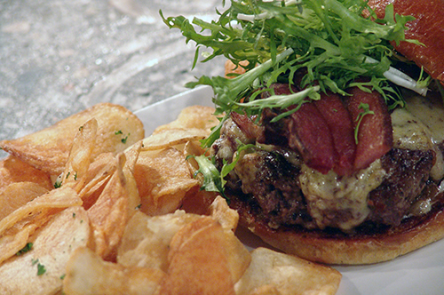

Welcome!
Opened in December 2011, Kinetic Bistro is the newest addition to The BLVD — the rejuvenated and revitalized downtown area in Lancaster, California. Our mission is to provide the best possible dining experience by serving high-quality, freshly prepared food at reasonable prices.
